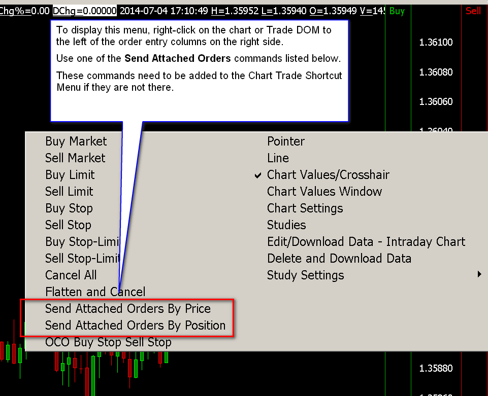

Order Types
- Order Types
- Market
- Limit
- Stop
- Stop-Limit
- Market Limit
- Market If Touched
- Limit Chase
- Limit Touch Chase
- Trailing Stop
- Trailing Stop-Limit
- Triggered Trailing Stop
- Triggered Trailing Stop Limit
- Step Trailing Stop
- Step Trailing Stop Limit
- Triggered Step Trailing Stop
- Triggered Step Trailing Stop Limit
- OCO Limit and Stop
- OCO Limit and Stop-Limit
- OCO Buy Stop Sell Stop
- OCO Buy Stop-Limit Sell Stop-Limit
- OCO Buy Limit Sell Limit
- Send Attached Orders - Position/Price
- Limit if Touched
- Bid Ask Quantity Triggered Stop
- Triggered Limit
- Trade Volume Triggered Stop
- Stop with Bid/Ask Triggering
- Stop with Last Triggering
- Limit if Touched - Client
- Market if Touched - Client
- Trade Volume Triggered Stop-Limit
- Stop Limit - Client
- Triggered Stop
- Triggered Limit With Chase
- Chart Trade Shortcut Menu
- Move Attached Targets to Price
- Move Attached Stops to Price
- Remove Link Between Stop Attached Orders
- Sierra Chart Management of Trailing Stop and Chase Orders
- Triggered Limit Order Entry Study
- Bid/Ask Quantity Triggered Stop Study
- Spread Order Entry Study
- Triggered Market Order For Trade Symbol
- Triggered Stop Order Study
- Stop Orders on the CME
- Fully Client Side Managed Orders
- Understanding Why Orders Do Not Fill At Expected Prices
- Order Rejected from Outside of Bands
- Reducing Slippage from Stop Orders
Order Types
This section lists the various supported order types. It provides a description for them and describes each of the inputs that are specific to them. If an order type can also be used as an Attached Order, then the Attached Order inputs are also described.
The following are the methods by which an order of any of these Order Types can be submitted:
- Through the Trade Window.
- Through the Chart or Trade DOM. Make sure you add the Order types to the Chart Trade Shortcut Menu.
- If the Order Type is supported as an Attached Order, it can be used as an Attached Order.
- These orders types are also supported through ACSIL.
- Some, but not all, order types can be submitted through the Chart/Trade DOM / Order Entry Ladder.
When this documentation makes reference to a parent order or parent price, it is referring to the main order that Attached Orders are attached to. This is known as the parent order.
Market
A market order will fill at the current market price. No other price inputs are required.
In the case of a Buy order it will fill at the lowest available Sell limit order in the market. In the case of a Sell order it will fill at the highest available Buy limit order in the market. Execution should be immediate, so long as there is a matching order.
A market order will provide the fastest execution.
Limit
This is a standard Limit order type. A Limit order is an order to buy or sell at a specific price.
A buy limit order can only be executed at the limit price or lower, and a sell limit order can only be executed at the limit price or higher.
A Buy Limit order which is at or above the current Ask price will fill immediately.
A Sell Limit order which is at or below the current Bid price will fill immediately.
Limit Order Inputs (Trade Window >> Main)
Limit
This is the price box for the Limit price. Enter a price or select one from the drop-down list. Refer to Price Formatting.
Attached Limit Order Inputs (Trade Window >> Targets)
Limit Offset
This is the offset value from the parent order price.
Stop
This is a standard Stop order type. A Stop order is an order to buy or sell once the price of the symbol reaches a specified price, known as the Stop price. When the specified price is reached, your Stop order becomes a market order.
Rejection of Stop Orders Beyond Last Trade Price
With some of the supported Trading services, a Stop order price cannot be above the current market price for a Sell stop or below the current market price for a Buy stop. If the Stop order price does not meet these rules, the Trading service will reject the order. You will see this rejection for the Stop order displayed in the Trade Service Log and also the Trade Activity Log. The specific reason for the rejection will be given by the trading service.
These rejections are from the exchange. In the case of when using Trade Simulation Mode, Sierra Chart will not reject these Stop orders.
When Global Settings >> Chart Trade Settings >> Reject Stop Orders That Will Immediately Fill is enabled, then Sierra Chart will still accept a Buy stop order if it is below the current price by a few ticks and still accept a Sell Stop order if it is above the current price by a few ticks, and send it to the connected Trading service. However, the Trading service still may reject the Stop order. When this option is disabled, Sierra Chart performs no check on a Stop order price in relation to the current market price.
To work around the rejection of a Stop order in this case, you may want to use a Triggered Limit order instead.
Stop Order Inputs (Trade Window >> Main)
Stop
This price box is for the Stop price. Enter a price or select one from the drop-down list. Refer to Price Formatting.
Attached Stop Order Inputs (Trade Window >> Targets)
Stop Offset
This is the offset value from the parent order price when this order type is used as an Attached Order.
Stop-Limit
This is a standard Stop-Limit order type. A Stop-Limit order is an order to buy or sell that combines the features of a Stop order and a Limit order. Once the stop price is reached, the Stop-Limit order becomes a Limit order to buy or to sell at the specified price.
When modifying a Stop-Limit order, the Limit price will be adjusted to maintain the same offset it currently has to the Stop price.
Refer to the Stop section for the reasons why a Stop-Limit order can be rejected upon order submission.
Stop Limit Order Inputs (Trade Window >> Main)
Stop
This price box is for the Stop price. Enter a price or select one from the drop-down list. Refer to Price Formatting.
The Limit price is automatically set and will be the specified number of Ticks (by default) away from the Stop price. To set this Limit offset, Open the Trade Window. Select the Set tab.
Set the Stop-Limit Order Limit Offset >> Primary Orders setting as a number of Ticks or Percentage. For more information, refer to Stop-Limit Order Limit Offset.
Attached Stop Limit Order Inputs (Trade Window >> Targets)
Stop Offset
This is the Stop offset value from the parent order price. The Limit price is automatically set and will be the specified number of Ticks (by default) away from the Stop price. To set this Limit offset, Open the Trade Window. Select the Set tab. Set the Stop-Limit Order Limit Offset >> Attached Orders setting as a number of Ticks or Percentage. For more information, refer to Stop-Limit Order Limit Offset.
Market Limit
This is a CME order type which only works with the Teton Order Routing Service. For more information, refer to Market Limit.
Market If Touched
This is a standard Market If Touched (MIT) order type.
In the case of a Buy MIT order, it will become a Market order when the last trade price is equal to or less than the Trigger Price. In the case of a Sell MIT order, it will become a Market order when the last trade price is equal to or greater than the Trigger Price.
Based on the above, when using Sierra Chart Trade Simulation Mode, the order does not need to be touched for it to become a market order. In the case of a Buy Market if Touched order, if the last trade price is simply below that order, the order will become a market order immediately. The opposite is true for a Sell Market if Touched order.
This order type is not supported with all of the supported Trading services that Sierra Chart works with. If it is not supported, then when submitting an order of this type, it will be rejected by the trading service or internally by Sierra Chart if Sierra Chart knows ahead of time that the trading service does not support this order type.
Market If Touched Order Inputs (Trade Window >> Main)
Trigger Price
This price box is for the Trigger price of the order. Enter a price or select one from the drop-down list. Refer to Price Formatting.
Attached Market If Touched Order Inputs (Trade Window >> Targets)
Trigger Offset
When used as an Attached Order, this is the Trigger offset value from the parent order price. For example, if this is set to 1 as a Price, then the trigger price for the order will be exactly 1.0 from the parent order price.
Limit Chase
The Limit Chase order type is a Limit order type that is automatically adjusted to follow (chase) the current market price.
To use this order type you can either choose this order type from the list of Order Types on the Trade Window and enter the Limit price. Or you can enable the Menu/M >> Orders >> Use Limit Chase Orders option on the Trade Window menu. In this last case, when submitting a normal Limit order, it will be converted to a Limit Chase order.
The Limit Chase order type is also supported as an Attached Order. In this particular case, the Menu/M >> Orders >> Use Limit Chase Orders option on the Trade Window menu does not apply to Attached Orders.
When the Menu/M >> Orders >> Use Limit Chase Orders option on the Trade Window menu is enabled, then a Limit order entered from the Trade Window, the Chart DOM, the Trade DOM, the chart, or an automated trading system, will be converted to a Limit Chase order.
The maximum chase amount in Ticks is set through Set >> Max Chase for Chase Limit Orders on the Trade Window. Refer to the image below for the location of this setting.
When using the Limit Chase order type, the order will automatically be modified up in the case of Buy Limit orders and down in the case of Sell Limit orders.
After the order is submitted, and the last trade price rises in the case of a Buy order, then the order is adjusted up by the amount the last trade price increased by, no more than the specified Set >> Max Chase for Chase Limit Orders amount.
If there is no last trade price available, then the average of the Bid and Ask prices will be used if those are available.
If the last trade price declines in the case of a Sell order, then the order is adjusted down by the amount the last trade price decreased by, no more than the specified Set >> Max Chase for Chase Limit Orders amount.
It is recommended to run a Chart Replay and experiment with the Limit Chase order type to get an understanding of how it works.
In the case of when using an Attached Order, the chase action does not begin until the parent order fills.
{kind=link}
Limit Chase Order Inputs (Trade Window >> Main)
Limit
This price box is for the Limit order price. Enter a price or select one from the drop-down list. Refer to Price Formatting.
Limit Chase Order Settings (Trade window >> Set)
Maximum Chase for Chase Limit Orders
On the Set tab of the Trade Window for a chart, the Maximum Chase for Chase Limit Orders sets the maximum value in Ticks that a chase limit order will be adjusted by.
Attached Limit Chase Order Inputs (Trade Window >> Targets)
Limit Offset
This is the offset value from the parent order price.
Maximum Chase
This applies only to Attached Orders and is one of the settings for the Limit Chase Attached Order.
This sets the maximum amount the order will chase the current price. This value can either be in Price, Ticks or a Percent.
Limit Touch Chase
The Limit Touch Chase order type functions similar to the Limit Chase order type. The only difference between these order types is that the Limit Touch Chase order type does not begin the chase action until its Limit price is touched by the last trade price of the market.
The specific definition of being touched by the last trade price is in the case of a Buy Limit order, the last trade price is less or equal to the limit price. In the case of a Sell Limit order, the last trade price is greater than or equal to the limit price.
Once the Limit price is touched, then the Limit Touch Chase order type functions the same way as a Limit Chase order type.
The Limit Touch Chase order type can be submitted as both a main/primary order or used as an Attached Order.
Limit Touch Chase Order Inputs (Trade Window >> Main)
Limit
This price box is for the Limit order price. Enter a price or select one from the drop-down list. Refer to Price Formatting.
Limit Touch Chase Order Settings (Trade Window >> Set)
Maximum Chase for Chase Limit Orders
On the Set tab of the Trade Window for a chart, the Maximum Chase for Chase Limit Orders sets the maximum value in Ticks that a chase limit order will be adjusted by.
Attached Limit Touch Chase Order Inputs (Trade Window >> Targets)
Limit Offset
This is the offset value from the parent order price.
Maximum Chase
This sets the maximum amount the Attached Order will chase the current price. This value can either be in Price, Ticks or a Percent.
Trailing Stop
This is a Trailing stop order type. This Stop order will trail the current market price by maintaining a difference that does not exceed the Trail Offset.
The Trail Offset is automatically set by the difference between the original Stop price and the current price at the time the order was submitted. Or, in the case of an Attached Order, the Trail Offset is set by the Attached Order Stop Offset setting.
If you manually modify the Trailing Stop order, then the Trail Offset will be recalculated by taking the difference between the new Stop price and the current market price. Or in the case of an Attached Order, when its parent has not filled, it will be the difference between the new Stop price and the parent order price. This recalculation only occurs when Global Settings >> Chart Trade Settings >> Adjust Trail Offset When Modifying Trail Order is enabled. Otherwise, this does not occur and the offset remains as it originally was.
The Trail Offset is also recalculated when the Trailing Stop order is modified using the ACSIL sc.ModifyOrder function.
This order type can be entered from the Trade Window, used as an Attached Order or entered from the Chart Trade Shortcut Menu.
Trailing Stop Order Inputs (Trade Window >> Main)
Stop
This price box is for the Stop price. For example, if the current market price is 100, this is a Buy Stop, and you enter a Stop price of 105, this creates a Trail Offset of 5. If the current market price drops to 99, then the stop will be adjusted to 104. Enter a price or select one from the drop-down list. Refer to Price Formatting.
Attached Trailing Stop Order Inputs (Trade Window >> Targets)
Stop Offset
This is the Stop offset value from the parent order price. This only applies to Attached Orders. This also sets the Trail Offset.
Trailing Stop-Limit
This stop type works identically to Trailing Stop, except that it is a Stop-Limit type. The Limit price is automatically set and will be the specified number of Ticks (by default) away from the Stop price.
To set this Limit offset, Open the Trade Window. Select the Set tab. Set the Stop-Limit Order Limit Offset >> Primary/Attached Orders setting as a number of Ticks or Percentage. For more information, refer to Stop-Limit Order Limit Offset.
Trailing Stop Limit Order Inputs (Trade Window >> Main)
Stop
This price box is for the Stop price. For example, if the current market price is 100, this is a Buy Stop, and you enter a Stop price of 105, this creates a Trail Offset of 5. If the current market price drops to 99, then the stop will be adjusted to 104. Enter a price or select one from the drop-down list. Refer to Price Formatting.
Attached Trailing Stop Limit Order Inputs (Trade Window >> Targets)
Stop Offset
This is the Stop offset value from the parent order price. This only applies to Attached Orders. This also sets the Trail Offset.
Triggered Trailing Stop
This is a Triggered Trailing Stop order type. This Trailing Stop order will trail the current market price by maintaining a difference that does not exceed the specified Trail Offset, when the Trigger Price (calculated from the Trigger Offset in the case of an Attached Order) has been reached by the current market price.
With this particular order type, the trail action will not begin until the Trigger Price has been reached.
In the case of an Attached Order of this type, the order must have an Open status before the Trigger Price can be triggered.
In the case of an Attached Order, the Trigger Price is calculated based upon the Trigger Offset setting.
If you manually modify the Trailing Stop order, then the trailing stop offset will be recalculated by taking the difference between the new Stop price and the current market price. Or in the case of an Attached Order, when its parent has not filled, it will be the difference between the new Stop price and the parent order price. This only occurs when Global Settings >> Chart Trade Settings >> Adjust Trail Offset When Modifying Trail Order is enabled. Otherwise, this does not occur and the offset remains as it originally was.
The Trigger Price is automatically adjusted in the case of an Attached Order of this order type when the parent order is modified, to maintain the same offset to the Stop Attached Order price as it was previously.
This Order Type can also be used in combination with the Move to Breakeven for Stop settings for an Attached Order.
Triggered Trailing Stop Order Inputs (Trade Window >> Main)
Stop
This price box is for the Stop price. This also sets the Trail Offset when the order is not used as an Attached Order. For example, if the current market price is 100, this is a Buy Stop, and you enter a Stop price of 105, this creates a Trail Offset of 5. Enter a price or select one from the drop-down list. Refer to Price Formatting.
Trigger Price
This price box is for the Trigger Price. For example, if the current market price is 100, this is a Buy Stop, and you enter a Trigger Price of 95, then when the price drops to 95, the trailing action will begin. Enter a price or select one from the drop-down list. Refer to Price Formatting.
Attached Triggered Trailing Stop Order Inputs (Trade Window >> Targets)
Stop Offset
This price is the initial Stop offset value from the parent order price.
Trigger Offset
This is the trigger offset value from the parent order price. For example, if the parent order price is 100, this is a Sell Stop and you enter a Trigger Offset of 5 as a Price, then the Trigger Price will be 105. When 105 is touched by the current market price, then the Stop will begin to trail the current price.
Trail Offset
Once the trailing action begins when the Trigger Price (calculated from Trigger Offset) has been met, then this is the trailing offset value from the current price.
For example, if this is set to 5 Ticks, then the trailing stop order will trail the current price by 5 Ticks.
Triggered Trailing Stop Limit
This stop type works identically to Triggered Trailing Stop, except that it is a Stop-Limit type. The Limit price is automatically set and will be the specified number of Ticks (by default) away from the Stop price.
To set this Limit offset, Open the Trade Window. Select the Set tab. Set the Stop-Limit Order Limit Offset >> Primary/Attached Orders setting as a number of Ticks or Percentage. For more information, refer to Stop-Limit Order Limit Offset.
This Order Type can also be used in combination with the Move to Breakeven for Stop settings for an Attached Order.
Triggered Trailing Stop Limit Order Inputs (Trade Window >> Main)
Stop
This price box is for the Stop price. This also sets the Trail Offset when the order is not used as an Attached Order. For example, if the current market price is 100, this is a Buy Stop, and you enter a Stop price of 105, this creates a Trail Offset of 5. Enter a price or select one from the drop-down list. Refer to Price Formatting.
Trigger Price
This price box is for the Trigger Price. For example, if the current market price is 100, this is a Buy Stop, and you enter a Trigger Price of 95, then when the price drops to 95, the trailing action will begin. Enter a price or select one from the drop-down list. Refer to Price Formatting.
Attached Triggered Trailing Stop Limit Order Inputs (Trade Window >> Targets)
Stop Offset
This price is the initial Stop offset value from the parent order price.
Trigger Offset
This is the trigger offset value from the parent order price. For example, if the parent order price is 100, this is a Sell Stop and you enter a Trigger Offset of 5 as a Price, then the Trigger Price will be 105. When 105 is touched by the current market price, then the Stop will begin to trail the current price.
Trail Offset
Once the trailing action begins when the Trigger Price (calculated from Trigger Offset) has been met, then this is the trailing offset value from the current price.
For example, if this is set to 5 Ticks, then the trailing stop order will trail the current price by 5 Ticks.
Step Trailing Stop
The Step Trailing Stop order type is a trailing stop order type that trails the market price by the specified Trail Offset and moves in steps by the specified Step Amount. For example, if you are using a Sell Step Trailing Stop order type, the parent order price or the current market price is 100, the Stop Offset is 5 or you have set the Stop price to 95, both of which will establish a Trail Offset of 5, the Step Amount is 2, then when the market price moves from 100 to 102, then the stop price will move to 97 which is trailing the market price by 5. When the market moves to 104, then the Stop will move to 99. The movement is not tick by tick, rather in steps of the Step Amount.
If you manually modify the Step Trailing Stop order, then the Trail Offset does not change as in the case of other trailing stop types when Global Settings >> Chart Trade Settings >> Adjust Trail Offset When Modifying Trail Order is enabled.
It is not possible to change the Step Amount after this order is submitted.
Step Trailing Stop Order Inputs (Trade Window >> Main)
Stop
This price box is for the initial Stop price. This also sets the Trail Offset and the Step Amount. For example, if the current market price is 100, this is a Buy Stop, and you enter a Stop price of 105, this will then set a Trail Offset of 5 and a Step Amount of 5 as well. Enter a price or select one from the drop-down list. Refer to Price Formatting.
Attached Step Trailing Step Order Inputs (Trade Window >> Targets)
Stop Offset
This is the Stop offset value from the parent order price. The setting is only for Attached Orders. This will always be a positive value. This offset also sets the Trail Offset.
Step Amount
This is the amount in either Ticks, an actual Price, or a Percentage that the Trailing Stop moves in amounts/increments of. Only Attached Orders can set a Step Amount which differs from the Trail Offset.
If this is unset or 0, then the Step Amount will be equal to the Attached Order Stop Offset.
Step Trailing Stop Limit
This stop type works identically to Step Trailing Stop, except that it is a Stop-Limit type. The Limit price is automatically set and will be the specified number of Ticks (by default) away from the Stop price.
To set this Limit offset, Open the Trade Window. Select the Set tab. Set the Stop-Limit Order Limit Offset >> Primary/Attached Orders setting as a number of Ticks or Percentage. For more information, refer to Stop-Limit Order Limit Offset.
Step Trailing Stop Limit Order Inputs (Trade Window >> Main)
Stop
This price box is for the initial Stop price. This also sets the Trail Offset and the Step Amount. For example, if the current market price is 100, this is a Buy Stop, and you enter a Stop price of 105, this will then set a Trail Offset of 5 and a Step Amount of 5 as well. Enter a price or select one from the drop-down list. Refer to Price Formatting.
Attached Step Trailing Step Limit Order Inputs (Trade Window >> Targets)
Stop Offset
This is the Stop offset value from the parent order price. The setting is only for Attached Orders. This will always be a positive value. This offset also sets the Trail Offset.
Step Amount
This is the amount in either Ticks, an actual Price, or a Percentage that the Trailing Stop moves in amounts/increments of. Only Attached Orders can set a Step Amount which differs from the Trail Offset.
If this is unset or 0, then the Step Amount will be equal to the Attached Order Stop Offset.
Triggered Step Trailing Stop
The Triggered Step Trailing Stop order type is a trailing stop order type that trails the market price in steps of the Trail Offset.
The trailing action only begins when the Trigger Price has been reached.
For example, if you are using a Sell Triggered Step Trailing Stop type, the initial stop price is 95, the market price is 100, the Trail Offset is 5, and the Trigger Price is 110, then when the market price moves to 110, the trailing action will begin and at that time the stop will be moved to 105. When the market moves to 115, then the stop will move to 110. The movement is not tick by tick, rather it steps as the Trail Offset.
If you manually modify the Triggered Step Trailing Stop order, then the Trail Offset does not change as in the case of other trailing stop types when Global Settings >> Chart Trade Settings >> Adjust Trail Offset When Modifying Trail Order is enabled.
This Order Type can also be used in combination with the Move to Breakeven for Stop settings for an Attached Order.
Triggered Step Trailing Stop Order Inputs (Trade Window >> Main)
Stop
This price box is for the Stop price. This also sets the Trail Offset when the order is not used as an Attached Order. For example, if the current market price is 100, this is a Buy Stop, and you enter a Stop price of 105, this creates a Trail Offset of 5. Enter a price or select one from the drop-down list. Refer to Price Formatting.
Trigger Price
This price box is for the Trigger Price. For example, if the current market price is 100, this is a Buy Stop, and you enter a Trigger Price of 95, then when the price drops to 95, the trailing action will begin. Enter a price or select one from the drop-down list. Refer to Price Formatting.
Attached Triggered Step Trailing Stop Order Inputs (Trade Window >> Targets)
Stop Offset
This is the Stop offset value from the parent order price. This will always be a positive value. For example, if this is set to 4 Ticks, then this means that the Stop will initially be placed 4 Ticks away from the parent order price.
Trigger Offset
This is the trigger offset value from the parent order fill price. For example, if the parent order fill price is 100, this is a Sell Stop and you enter a Trigger Offset of 5 as a Price, then the Trigger Price will be 105. When 105 is touched by the current market price, then the Stop will begin to trail the current price in steps.
Trail Offset
Once the trailing action begins when the Trigger Price (calculated from (Attached Order) Trigger Offset) has been met, then this is the Trail Offset value from the current price. For example, if this is set to 5 Ticks, then this trailing stop order will trail the current price by 5 Ticks in steps of 5 Ticks in response to the current market price movement.
Triggered Step Trailing Stop Limit
This stop type works identically to Triggered Step Trailing Stop, except that it is a Stop-Limit type. The Limit price is automatically set and will be the specified number of Ticks (by default) away from the Stop price.
To set this Limit offset, Open the Trade Window. Select the Set tab. Set the Stop-Limit Order Limit Offset >> Primary/Attached Orders setting as a number of Ticks or Percentage. For more information, refer to Stop-Limit Order Limit Offset.
Triggered Step Trailing Stop Limit Order Inputs (Trade Window >> Main)
Stop
This price box is for the Stop price. This also sets the Trail Offset when the order is not used as an Attached Order. For example, if the current market price is 100, this is a Buy Stop, and you enter a Stop price of 105, this creates a Trail Offset of 5. Enter a price or select one from the drop-down list. Refer to Price Formatting.
Trigger Price
This price box is for the Trigger Price. For example, if the current market price is 100, this is a Buy Stop, and you enter a Trigger Price of 95, then when the price drops to 95, the trailing action will begin. Enter a price or select one from the drop-down list. Refer to Price Formatting.
Attached Triggered Step Trailing Stop Limit Order Inputs (Trade Window >> Targets)
Stop Offset
This is the Stop offset value from the parent order price. This will always be a positive value. For example, if this is set to 4 Ticks, then this means that the Stop will initially be placed 4 Ticks away from the parent order price.
Trigger Offset
This is the trigger offset value from the parent order fill price. For example, if the parent order fill price is 100, this is a Sell Stop and you enter a Trigger Offset of 5 as a Price, then the Trigger Price will be 105. When 105 is touched by the current market price, then the Stop will begin to trail the current price in steps.
Trail Offset
Once the trailing action begins when the Trigger Price (calculated from (Attached Order) Trigger Offset) has been met, then this is the Trail Offset value from the current price. For example, if this is set to 5 Ticks, then this trailing stop order will trail the current price by 5 Ticks in steps of 5 Ticks in response to the current market price movement.
OCO Limit and Stop
This order type is for entering a Limit order and a Stop order at the same time which are in an OCO (order cancels order) group. This means when one of the orders fills or is canceled, the other will be canceled.
This type of order can be entered from the Trade Window for the chart. And it can be entered by right clicking on the chart or Trade DOM with the Pointer when in Chart Trade Mode and selecting Buy OCO Limit and Stop or Sell OCO Limit and Stop from the displayed menu.
If this order type command is not listed, then it will need to be added. To do this, select Global Settings >> Customize Chart Trade Menu. Add all of the order types that you want to use.
This Order Type does support using Attached Orders with it. If the option Use Attached Orders on the Trade Window is enabled, then a set of Attached Orders will be attached to both the Limit and Stop orders.
OCO Limit and Stop Order Inputs (Trade Window >> Main)
Limit
This price box is for the Limit price for the Limit order. Enter a price or select one from the drop-down list. Refer to Price Formatting.
Stop
This price box is for the Stop price for the Stop order. Enter a price or select one from the drop-down list. Refer to Price Formatting.
OCO Limit and Stop-Limit
This order type is for entering a Limit order and a Stop-Limit order at the same time which are in an OCO (order cancels order) group. This means when one of the orders fills or is canceled, the other will be canceled.
This type of order can be entered from the Trade Window for the chart. And it can be entered by right clicking on the chart or Trade DOM with the Pointer when in Chart Trade Mode and selecting Buy OCO Limit and Stop-Limit or Sell OCO Limit and Stop-Limit from the displayed menu.
If this order type command is not listed, then it will need to be added. To do this, select Global Settings >> Customize Chart Trade Menu. Add all of the order types that you want to use.
OCO Limit and Stop Limit Order Inputs (Trade Window >> Main)
Limit
This price box is for the Limit price for the Limit order. Enter a price or select one from the drop-down list. Refer to Price Formatting.
Stop
This price box is for the Stop price for the Stop-Limit order. Enter a price or select one from the drop-down list. Refer to Price Formatting.
The Limit price of the Stop-Limit order is automatically set and will be the number of Ticks away from the Stop price as specified on the More tab of the Trade Window for the chart in the Limit Offset for Stop-Limit Order box.
OCO Buy Stop Sell Stop
The OCO (order cancels order) Buy Stop Sell Stop order type, consists of a Buy Stop order and a Sell Stop order in an OCO group. So when one order is filled or canceled, the other order will be immediately and fully canceled.
Entering from Trade Window: Go to the trade window for the chart or Trade DOM. In the list of Order Types, select this order type. Enter the Buy Stop and Sell Stop prices. Submit the order by pressing either Buy or Sell on the Trade Window.
Entering directly from chart / Trade DOM: Right-click with your pointing device on the chart at the Buy Stop price and select OCO Buy Stop Sell Stop on the Chart Trade menu. Move your Pointer to the Sell Stop price and left click. If this order type command is not listed on the menu, then it will need to be added. To do this, select Global Settings >> Customize Chart Trade Menu. Add all of the order types that you want to use. For more information, refer to Chart Trading.
In the case of the Trade DOM, refer to Entering Orders on the Trade DOM for instructions on where to right-click to get the Chart Trade menu.
This order type supports Attached Orders. If the option Use Attached Orders on the Trade Window is enabled, then a set of Attached Orders will be attached to each Stop order.
The Sierra Chart Chart Trading feature also provides an OCO Buy Stop Sell Stop Auto Set command. To use this, it is first necessary to determine the offset for the orders, in Ticks, from the center price that you select on the chart. Go to the Set tab on the Trade Window of the chart and set the Auto-Set Prices Offset for OCO Buy Sell Orders to the number of Ticks that you want to offset the orders from the center price by. Once this is set, it does not need to be set again. It is saved with your Chartbook.
Right-click on the chart at the center price and select OCO Buy Stop Sell Stop (Auto Set) on the menu. Both a Buy Stop and Sell Stop order will be entered above and below the center price based upon your specified offset. If this order type command is not listed, then it will need to be added. To do this, select Global Settings >> Customize Chart Trade Menu. Add all of the order types that you want to use.
OCO Buy Stop Sell Stop Order Inputs (Trade Window >> Main)
Buy Stop
This price box is for the Buy Stop price. Enter a price or select one from the drop-down list. Refer to Price Formatting.
Sell Stop
This price box is for the Sell Stop price. Enter a price or select one from the drop-down list. Refer to Price Formatting.
OCO Buy Stop-Limit Sell Stop-Limit
The OCO (order cancels order) Buy Stop-Limit Sell Stop-Limit order type, consists of a Buy Stop-Limit order and a Sell Stop-Limit order in an OCO group. So when one order is filled or canceled, the other order will be immediately and fully canceled. You can enter this order through the Trade Window of the chart by selecting this Order Type and specifying the Buy Stop and Sell Stop prices. Submit the order by pressing either Buy or Sell on the Trade Window.
Or you can use the Chart Trading feature. For chart trading, right-click on the chart at the Buy stop price and select OCO Buy Stop-Limit Sell Stop-Limit on the menu. Move your Pointer to the Sell Stop price and left click. If this order type command is not listed, then it will need to be added. To do this, select Global Settings >> Customize Chart Trade Menu. Add all of the order types that you want to use.
This order type supports Attached Orders. If the option Use Attached Orders on the Trade Window is enabled, then a set of Attached Orders will be attached to each Stop-Limit order.
The Sierra Chart Chart Trading feature also provides an OCO Buy Stop-Limit Sell Stop-Limit Auto Set command. To use this, it is first necessary to determine the offset for the orders, in Ticks, from the center price that you select on the chart.
Go to the Set tab on the Trade Window and set the Auto-Set Prices Offset for OCO Buy Sell Orders to the number of Ticks that you want the orders to offset from the center price by. You will also need to set the Stop-Limit Order Limit Offset >> Primary Orders setting. This sets how far in Ticks the Limit price is from the Stop price. Once these are set, they do not need to be set again. They are saved with the Chartbook.
Right-click on the chart at the center price and select OCO Buy Stop-Limit Sell Stop-Limit (Auto Set). Both a Buy Stop-Limit and Sell Stop-Limit order will be entered above and below the center price based upon the specified offset. If this order type command is not listed, then it will need to be added. To do this, select Global Settings >> Customize Chart Trade Menu. Add all of the order types that you want to use.
OCO Buy Stop Limit Sell Stop Limit Order Inputs (Trade Window >> Main)
Buy Stop
This price box is for the Buy Stop price. Enter a price or select one from the drop-down list. Refer to Price Formatting.
The Limit price is automatically set and will be the specified number of Ticks (by default) away from the Stop price.
To set this Limit offset, Open the Trade Window. Select the Set tab. Set the Stop-Limit Order Limit Offset >> Primary Orders setting as a number of Ticks or Percentage. For more information, refer to Stop-Limit Order Limit Offset.
Sell Stop
This price box is for the Sell Stop price. Enter a price or select one from the drop-down list. Refer to Price Formatting.
The Limit price is automatically set and will be the specified number of Ticks (by default) away from the Stop price.
To set this Limit offset, Open the Trade Window. Select the Set tab. Set the Stop-Limit Order Limit Offset >> Primary Orders setting as a number of Ticks or Percentage. For more information, refer to Stop-Limit Order Limit Offset.
OCO Buy Limit Sell Limit
The OCO (order cancels order) Buy Limit Sell Limit order type, consists of a Buy Limit order and a Sell Limit order in an OCO group. So when one order is filled or canceled, the other order will be immediately and fully canceled. You can enter this order through the Trade Window of the chart by selecting this order type and specifying the Buy Limit and Sell Limit prices. Submit the order by pressing either Buy or Sell on the Trade Window.
Or you can use the Chart Trading feature. For chart trading, right-click on the chart at the Buy Limit price and select OCO Buy Limit Sell Limit. Move your Pointer to the Sell Limit price and left click. If this order type command is not listed, then it will need to be added. To do this, select Global Settings >> Customize Chart Trade Menu. Add all of the order types that you want to use.
This order type supports Attached Orders. If the option Use Attached Orders on the Trade Window is enabled, then a set of Attached Orders will be attached to each Limit order.
The Sierra Chart Chart Trading feature also provides an OCO Buy Limit Sell Limit Auto Set command. To use this, it is first necessary to determine the offset for the orders, in Ticks, from the center price that you select on the chart. Go to the Set tab on the Trade Window of the chart and set the Auto-Set Prices Offset for OCO Buy Sell Orders to the number of Ticks that you want the orders offset from the center price by. Once this is set it does not need to be set again. It is saved with your Chartbook.
Right-click on the chart at the center price and select OCO Buy Limit Sell Limit (Auto Set) on the menu. Both a Buy Limit and Sell Limit order will be entered above and below the center price based upon your specified offset in Ticks. If this order type command is not listed, then it will need to be added. To do this, select Global Settings >> Customize Chart Trade Menu. Add all of the order types that you want to use.
OCO Buy Limit Sell Limit Order Inputs (Trade Window >> Main)
Buy Limit Price
This price box is for the Buy Limit price. Enter a price or select one from the drop-down list. Refer to Price Formatting.
Sell Limit Price
This price box is for the Sell Limit price. Enter a price or select one from the drop-down list. Refer to Price Formatting.
Send Attached Orders - Position/Price
{kind=link}
Send Attached Orders is a special order type which lets you send the currently defined Attached Orders on the Targets tab of the Trade Window for the chart.
This order type can be used directly from the Trade Window or from the right-click Chart Shortcut Menu on the chart when in Chart Trade Mode. To enable Chart Trade Mode, make sure there is a checkmark by Trade >> Chart Trade Mode On.
An example menu when you right-click on a chart is displayed to the right with the Send Attached Orders commands highlighted. If these commands are not listed, then they will need to be added. To do this, select Global Settings >> Customize Chart Trade Menu. Add all of the order types that you want to use.
The order quantity for the Attached Orders is set through the Quantity box on the Trade Window and is also displayed and can be set at the top left of the chart when in Chart Trade Mode. This sets the overall quantity for all of the Attached Orders in all OCO Groups.
There are two possible reference prices for the Attached Orders. The selected price and the Average Position Price. The reference price is the price that the Attached Order Limit/Stop Offsets are relative to.
Send Attached Orders by Position will use the Average Position Price, if you have a position, as the reference price for the Attached Orders. Send Attached Orders by Price will use the price you specified or right-clicked at on the chart, as the reference price for the Attached Orders.
It is necessary to have a current Trade Position when sending Attached Orders except in the case of when using Send Attached Orders by Price and it is submitted directly from the Trade Window and not the chart.
Sending Attached Orders from a Chart or Trade DOM
- Select Global Settings >> Customize Chart Trade Menu. Add the Send Attached Orders by Position and Send Attached Orders by Price menu items to the Selected Menu Items, if they are not already added. Press OK.
- To send the Attached Orders from a chart or a Trade DOM relative to a price that you select, then move the Pointer to the price level you want to send the Attached Orders relative to, right-click and select Send Attached Orders by Price from displayed menu. You will need to right-click on the chart or Trade DOM away from the price scale. In the case of the Trade DOM, refer to Entering Orders on the Trade DOM for instructions on where to right-click to get the chart trade menu.
- To send the Attached Orders from a chart or a Trade DOM relative to the current position price, then right-click and select Send Attached Orders by Position from displayed menu. You will need to right-click on the chart or Trade DOM away from the price scale. In the case of the Trade DOM, refer to Entering Orders on the Trade DOM for instructions on where to right-click to get the chart trade menu.
- You do not have to decide whether or not the Attached Orders will be Buy or Sell. This is determined by your position.
- If confirmations are enabled, you will receive a confirmation window stating the Attached Orders to be sent. Press Yes to confirm.
- When you use Send Attached Orders by Position/Price from the right-click shortcut menu in Chart Trade Mode, and you do not have a trade position for the symbol, then nothing will happen and you will receive an error.
Sending Attached Orders from the Trade Window
Follow the instructions below to send Attached Orders from the Trade Window. This is a necessary procedure when a Trade Position does not exist.
- Set the Order Type on the Trade Window for the chart to Send Attached Orders - Position or Send Attached Orders - Price.
- It is necessary to use Send Attached Orders - Price if there is not currently a Trade Position so that a reference price can be manually specified.
- In the case of Send Attached Orders - Price, specify a reference price in the Reference Price box.
- Press the Buy button, to send Buy Attached Orders in the case when you have a Short position.
- Press the Sell button, to send Sell Attached Orders in the case when you have a Long position.
- If confirmations are enabled, you will receive a confirmation indicating the Attached Orders to be sent. Press Yes to confirm.
Sending Attached Orders by Keyboard Shortcuts
Follow the instructions below to send Attached Orders by using a Keyboard Shortcut.
- Refer to the Customize Keyboard Shortcuts documentation.
- Set up keyboard shortcut for the Send Attached Orders commands. These Are Listed in the Trading Keyboard Shortcuts list in the Customize Keyboard Shortcuts Window. The commands are: Buy Send Attached Orders - Position | Sell Send Attached Orders - Position | Send Attached Orders - Position.
- Go to the chart and enable Trade >> Trading Keyboard Shortcuts Enabled on the menu.
- When the chart is active, then use one of the configured keyboard shortcuts to send the Attached Orders.
Limit if Touched
The Limit if Touched order is similar to a standard Limit order, except that the Limit order does not actually become active until the Limit Price has been touched first.
Once the Limit Price has been touched, then the order becomes active and its order price is the Limit Price.
This order type is not supported with all of the supported Trading services that Sierra Chart works with. If it is not supported, then when submitting an order of this type, it will be rejected by the trading service or internally by Sierra Chart if Sierra Chart knows ahead of time that the trading service does not support this order type.
Limit if Touched Order Inputs (Trade Window >> Main)
Limit
This price box is for the Limit Price for the order. Enter a price or select one from the drop-down list.
Refer to Price Formatting.
Bid Ask Quantity Triggered Stop
The Bid Ask Quantity Triggered Stop order is triggered based on Bid Quantity or the Ask Quantity, depending upon the order Side, and the current market price. Bid/Ask Quantity represents the number of contracts or shares of the Limit orders at the Bid or Ask.
In the case of a Buy Bid Ask Quantity Triggered Stop, it is triggered and submitted as a market order when the best Ask price equals the entered Stop price, and the current Ask quantity/size is less than or equal to the Bid Ask Quantity entered. Or the current last trade price for the symbol is 1 tick to 8 ticks above the entered Stop price.
In the case of a Sell Bid Ask Quantity Triggered Stop, it is triggered and submitted as a market order when the best Bid price equals the entered Stop price, and the current Bid quantity/size is less than or equal to the Bid Ask Quantity entered. Or the current last trade price for the symbol is 1 tick to 8 ticks below the Sell Stop price.
This order type is unsupported during a Chart Replay.
Bid Ask Quantity Triggered Stop Order Inputs (Trade Window >> Main)
Stop
This price box is for the Stop price. Enter a price or select one from the drop-down list. Refer to Price Formatting.
BidAsk Qty
This price box is for the Bid or Ask Quantity. Enter a value which the current Bid or Ask Quantity needs to go below for the order to be triggered.
Attached Bid Ask Quantity Triggered Stop Order Inputs
Stop Offset
This is the offset value from the parent order price when the Bid Ask Quantity Triggered Stop is used as an Attached Order.
BidAsk Qty
This is the Bid or Ask Quantity when the Bid Ask Quantity Triggered Stop is used as an Attached Order.
Triggered Limit
The Triggered Limit is similar to a Stop Limit order, except that the Triggered Limit is a client-side managed order type which means until such time that the Trigger price is met, the Limit order is not sent to the external Trading service. When the Trigger price has been met, then the order is sent as a Limit order.
When the Limit order becomes active after the trigger price has been met, then it will only fill according to the standard rules for a Limit order. When using the Triggered Limit as a Stop Attached Order, once the Trigger has been met, depending upon the price of the Limit order, the Limit order is not necessarily going to fill right away. The market can continue to have traded through the Trigger but yet the Limit order will only fill according to the standard Limit order rules. Refer to Limit Order. You need to set the Attached Order Limit Offset to a larger amount than the Attached Order Trigger Offset to ensure that the Limit will fill right away if that is what you require.
This order type allows for the Limit Order Price to have a negative or positive offset from the Trigger price. Whereas with the standard Stop-Limit order, the Limit price can only be considered a positive offset, meaning that the buy or sell will always be at a less favorable price than the Stop Trigger price.
A Triggered Limit can be entered using any of the standard order entry methods.
This order type can also be entered from the chart using any of the following Chart Trading shortcut menu commands. If these commands are not listed on the shortcut menu, then they need to be added. To do this, select Global Settings >> Customize Chart Trade Menu. Add all of the order types that you want to use. For more information, refer to Chart Trading.
- Buy Triggered Limit
- Sell Triggered Limit
- Buy Triggered Limit (Auto-Set)
- Sell Triggered Limit (Auto-Set)
When not using the Auto-Set commands you can interactively set both the Trigger and Limit prices allowing you to identify and modify the price levels based on chart patterns that develop. First the Limit price is set upon selecting the menu command and then the Trigger price is set with the next left click.
In the case where you want to submit a Buy Triggered Limit order, the Trigger Line needs to be above the current market price and the Limit price will be below the Trigger price. In the case where you want to submit a Sell Triggered Limit order, the Trigger Line needs to be below the current market price and the Limit price will be above the Trigger price.
When using the Auto-Set commands, then the Trigger price is first set and the Limit price is automatically set. The offset the Limit price has from the Trigger price is set through the Set >> Trig (Triggered) Limit Offset setting on the Set tab of the Trade Window for the chart.
When modifying a Triggered Limit order on the chart, before the trigger has been met, only the Trigger price can be modified. Upon modification of the Trigger price, the Limit price will be automatically adjusted to maintain the same offset it has to the Trigger price. When the Trigger has been met, then the Limit price can be modified and will be the only line displayed for the order.
Triggered Limit Order Inputs (Trade Window >> Main)
Limit
This price box is for the Limit order price. Enter a price or select one from the drop-down list. Refer to Price Formatting.
Trigger
This price box is for the Trigger price of the order. Enter a price or select one from the drop-down list. Refer to Price Formatting.
Attached Triggered Limit Order Inputs (Trade Window >> Targets)
Limit Offset
This is the Limit offset value from the parent order price when the Triggered Limit order type is used as an Attached Order.
Trigger Offset
This is the Trigger offset value from the parent order price when the Triggered Limit order type is used as an Attached Order.
Trade Volume Triggered Stop
The Trade Volume Triggered Stop order is triggered based on both trade volume and price. This order type requires both a Price and Volume. Volume represents the number of contracts or shares traded.
In the case of a Buy Trade Volume Triggered Stop, when the last trade price is at the order price or higher, the trading volume of the symbol is accumulated and when it meets or exceeds the set Volume for the order, then the order is submitted as a market order immediately.
In the case of a Sell Trade Volume Triggered Stop, when the last trade price is at the order price or lower, the trading volume of the symbol is accumulated and when it meets or exceeds the set Volume for the order, then the order is submitted as a market order immediately.
The calculation of the trading volume is a simple sum of the volume of the trades as they occur for the symbol while the order is active.
This is a client-side managed stop order. For complete details about this, refer to Sierra Chart Management of Trailing Stop and Chase Orders.
Trade Volume Triggered Stop Order Inputs (Trade Window >> Main)
Stop
This price box is for the Stop price. Enter a price or select one from the drop-down list. Refer to Price Formatting.
Volume
This price box is for the Volume Quantity. Enter a value to check against the accumulated volume.
Attached Trade Volume Triggered Stop Order Inputs (Trade Window >> Targets)
Stop Offset
This is the offset value from the parent order price when the Trade Volume Triggered Stop order type is used as an Attached Order.
Volume
This is the Volume Quantity to be checked against the accumulated volume, when the Trade Volume Triggered Stop order type is used as an Attached Order
Stop with Bid/Ask Triggering
This order type is very similar to a standard Stop order type, except that this is a client-side managed order, which means until such time that the trigger price is met, the order is not sent to the external trading service.
As with other order types, this Stop with Bid/Ask Triggering order supports interactive order entry through a chart for the Stop price allowing you to set and modify the price level as you require.
In the case of a Buy Stop Order, the Stop Order is converted to a Market Order when the Bid Price is greater than or equal to the entered Stop Price.
In the case of a Sell Stop Order, the Stop Order is converted to a Market Order when the Ask Price is less than or equal to the entered Stop Price.
Stop with Bid/Ask Triggering Order Inputs (Trade Window >> Main)
Stop
This price box is for the Stop price. Enter a price or select one from the drop-down list. Refer to Price Formatting.
Attached Stop with Bid/Ask Triggering Order Inputs (Trade Window >> Targets)
Stop Offset
This is the offset value from the parent order price when this Order type is used as an Attached Order.
Stop with Last Triggering
This order type is very similar to a standard Stop order type, except that this is a client-side managed order, which means until such time that the trigger price is met, the order is not sent to the external trading service.
As with other order types, this Stop with Last Triggering order supports interactive order entry through a chart for the Stop price allowing you to set and modify the price level as you require.
In the case of a Buy Stop Order, the Stop Order is converted to a Market Order and is sent to the Trading Service when the Last Price is greater than or equal to the entered Stop Price.
In the case of a Sell Stop Order, the Stop Order is converted to a Market Order and is sent to the Trading Service when the Last Price is less than or equal to the entered Stop Price.
Normally you should be using a Stop order. Stop with Last Triggering is managed on the client side and may only be useful with cash Forex markets where the Forex trading service may trigger a stop order based on bid/ask prices. It does not make sense to use a Stop with Last Triggering in the futures markets. Since in the futures markets, stop order triggering is always going to be based upon the last trade price anyway.
Stop with Last Triggering Order Inputs (Trade Window >> Main)
Stop
This price box is for the Stop price. Enter a price or select one from the drop-down list. Refer to Price Formatting.
Attached Stop with Last Triggering Order Inputs (Trade Window >> Targets)
Stop Offset
This is the offset value from the parent order price when this Order type is used as an Attached Order.
Limit if Touched - Client
This is the same as the Limit if Touched Order, except that this order is managed on the Sierra Chart client-side until the set Limit price is touched, at which point the Order is sent to the Trading Service as a standard Limit Order.
Limit if Touched - Client Order Inputs (Trade Window >> Main)
Limit
This price box is for the Limit order price. Enter a price or select one from the drop-down list. Refer to Price Formatting.
Attached Limit if Touched - Client Order Inputs (Trade Window >> Targets)
Limit Offset
This is the offset value from the parent order price for an attached order.
Market if Touched - Client
This is the same as the Market if Touched Order, except that this order is managed on the Sierra Chart client-side until the set Trigger price is touched, at which point the Order is sent to the Trading Service as a standard Market Order.
Market if Touched - Client Order Inputs (Trade Window >> Main)
Trigger Price
This price box is for the Trigger price of the order. Enter a price or select one from the drop-down list. Refer to Price Formatting.
Attached Market if Touched - Client Order Inputs (Trade Window >> Targets)
Trigger Offset
This is the Trigger offset value from the parent order price for an attached order. For example, if this is set to 1 as a Price, then the trigger price for the order will be exactly 1.0 from the parent order price.
Trade Volume Triggered Stop-Limit
The Trade Volume Triggered Stop Limit Order is triggered based on both trade volume and price. This order type requires both a Price and Volume. Volume represents the number of contracts or shares traded.
In the case of a Buy Trade Volume Triggered Stop Limit, when the last trade price is at the order price or higher, the trading volume of the symbol is accumulated and when it meets or exceeds the set Volume for the order, then the order is submitted as a Limit order immediately.
In the case of a Sell Trade Volume Triggered Stop Limit, when the last trade price is at the order price or lower, the trading volume of the symbol is accumulated and when it meets or exceeds the set Volume for the order, then the order is submitted as a Limit order immediately.
Trade Volume Triggered Stop Limit Order Inputs (Trade Window >> Main)
Stop
This price box is for the Stop price. Enter a price or select one from the drop-down list. Refer to Price Formatting.
Volume
This price box is for the Volume Quantity. Enter a value to check against the accumulated volume.
Attached Trade Volume Triggered Stop Limit Order Inputs (Trade Window >> Targets)
Stop Offset
This is the offset value from the parent order price when the Trade Volume Triggered Stop Limit order type is used as an Attached Order.
Volume
This is the Volume Quantity to be checked against the accumulated volume, when the Trade Volume Triggered Stop Limit order type is used as an Attached Order
Stop Limit - Client
Stop Limit - Client Order Inputs (Trade Window >> Main)
Stop
Attached Stop Limit - Client Order Inputs (Trade Window >> Targets)
Stop Offset
Triggered Stop
A Triggered Stop order is an order type where when the Trigger price has been met, then the stop order becomes active.
In the case of a Buy Triggered Stop Order, when the last trade price of the Symbol is less than or equal to the Trigger price, then the Buy Stop order is sent at that time. The Stop order, is in a Held state until this condition has been met. The Buy Stop order price must be above the trigger price.
In the case of a Sell Triggered Stop Order, when the last trade price of the Symbol is greater than or equal to the Trigger price, then the Sell Stop order is sent at that time. The Stop order, is in a Held state until this condition has been met. The Sell Stop order price must be below the trigger price.
Triggered Stop Order Inputs (Trade Window >> Main)
Stop
The Stop order price. This is the price of the Stop order after it has been triggered and sent. A Buy Stop order price must be above the trigger price. A Sell Stop order price must be below the trigger price.
Trigger
The price at which when it is touched, triggers the activation and sending of the Stop order.
Triggered Stop Attached Order Inputs (Trade Window >> Targets)
Stop Offset
This is the offset from the parent order price which determines the price of the Stop order.
Trigger Offset
This is the offset from the parent order price which determines the trigger price.
Only a positive offset is supported. Based upon the triggering rules as explained above, no matter what you use for the Trigger Offset, you will always get an immediate trigger when this order type is used as an Attached Order.
Triggered Limit with Chase
The Triggered Limit with Chase order type is identical to Triggered Limit except that it also has the functionality to move towards the current market price after the Limit order has been triggered.
Triggered Limit With Chase Order Inputs (Trade Window >> Main)
For non-attached orders, to set the Maximum Chase amount use the Max Chase for Limit Orders setting on the Trade Window.
Limit
Trigger
Triggered Limit With Chase Attached Order Inputs (Trade Window >> Targets)
Limit Offset
Maximum Chase
Trigger Offset
Chart Trade Shortcut Menu
Most of the Order Types can be entered by right clicking on the chart or Trade DOM with the Pointer when in Chart Trade Mode and selecting the order type from the displayed menu.
To add the order types to the menu, select Global Settings >> Customize Chart Trade Menu. Add all of the order types that you want to use.
In the case of a Trade DOM, refer to the image below for instructions to display the Chart Trade Menu.

Move Attached Targets to Price
To move working Target orders on the Chart or Trade DOM to a selected price, follow the instructions below.
- Follow the instructions in the Chart Trade Shortcut Menu section to add the Move Targets to Price command to the Chart Trade Shortcut Menu.
- When there are working Target orders on the Chart or Trade DOM, right-click at the price level where you want to move the Targets to and select Move Targets to Price.
- If Order Confirmations are enabled, confirm the order modification by pressing the Yes button.
It is also supported to move Target Attached Orders to a price level by using a keyboard shortcut. To do this, follow the instructions below.
- Configure a keyboard shortcut for Trading Keyboard Shortcuts >> Move Attached Targets to Price. For instructions, refer to Configure Keyboard Shortcuts.
- Move with your Pointer to the price level on the chart where you want the Target Attached Orders moved to.
- Using your keyboard, press the key combination for the keyboard shortcut for Move Attached Targets to Price.
- If Order Confirmations are enabled, confirm the order modification by pressing the Yes button.
Move Attached Stops to Price
To move working Attached Stops orders on the Chart or Trade DOM to a selected price, follow the instructions below.
- Follow the instructions in the Chart Trade Shortcut Menu section to add the Move Attached Stops to Price command to the Chart Trade Shortcut Menu.
- When there are working Attached Stops orders on the Chart or Trade DOM, right-click at the price level where you want to move the Stops to and select Move Attached Stops to Price.
- If Order Confirmations are enabled, confirm the order modification by pressing the Yes button.
It is also supported to move Stop Attached Orders to a price level by using a keyboard shortcut. To do this, follow the instructions below.
- Configure a keyboard shortcut for Trading Keyboard Shortcuts >> Move Attached Stops to Price. For instructions, refer to Configure Keyboard Shortcuts.
- Move with your Pointer to the price level on the chart where you want the Stop Attached Orders moved to.
- Using your keyboard, press the key combination for the keyboard shortcut for Move Attached Stops to Price.
- If Order Confirmations are enabled, confirm the order modification by pressing the Yes button.
Remove Link Between Stop Attached Orders
It is supported to remove the link between Stop Attached Orders which were created as the result of using multiple Targets and the OCO Group All OCO Groups. To do this, follow the instructions below.
- Follow the instructions in the Chart Trade Shortcut Menu section to add the Remove Link Between Stop Attached Orders command to the Chart Trade Shortcut Menu.
- Right click anywhere on the chart and select this command from the Chart Shortcut Menu. It is not necessary to right-click directly on the Stop Order. All Stop Attached Orders for the Symbol and Trade Account which are linked together will have the link removed from them.
Sierra Chart Management of Trailing Stop and Chase Orders
The price modifications for Trailing Stop, the price modifications for Limit Chase and the management of all client-side managed orders, like Triggered Limit orders, are managed by Sierra Chart.
This information also applies to the Move to Breakeven for Stops functionality for Attached Orders.
This information also applies to the Send Order at Time Time in Force type.
Therefore, in order for these price modifications and triggering actions to occur based upon the current market price, the following must be true. Otherwise, no actions will take place on the order and it will remain the same.
- Sierra Chart must be running and be connected to the Data or Trading service ( File >> Connect to Data Feed), or be running a replay. In the case of live trading Sierra Chart must be connected to the Trading service.
Keep in mind if Sierra Chart loses connectivity to the Data or Trading Service server, the Trailing Stop order prices will not be updated in this case as well, unless you are running a replay and using Sierra Chart Trade Simulation Mode. In the case of client-side managed orders, triggering actions can also not be performed. - Real-time data needs to be received for the symbol or the chart needs to be replaying and updating. When you expect the trailing stop to move, there has to be price movement within the chart as well.
- The chart or Trade DOM the orders were entered from needs to remain open and continue to be set to both the same Symbol and Trade Account that the order is for.
- In the case of a chart, Trade >> Chart Trade Mode On needs to be enabled.
- The Global Settings >> Data/Trade Service Settings >> Common Settings >> Number of Stored Time and Sales Records should be set to at least 5000 to ensure no trade record data is missed when processing through all of the trade prices. This applies to a chart updating with real-time or delayed data, or during a chart replay.
When a Trailing Stop or a Limit Chase order is modified based upon the specifications given on this page for the Order Type, then this will be in response to movement of the last trade price.
These order modifications are logged in the Trade >> Trade Activity Log >> Trade Activity tab. For more information about viewing these order modifications, refer to Trade Activity Log.
You are able to see the last trade price which actually triggered the order modification of a Trailing Stop or Limit Chase order. When looking at an order modification line in the Trade Activity Log, look at the OrderActionSource field. It will say Auto trail order modification. Trigger price: [price]. The Trigger price is the price which triggered the modification of the order.
Sierra Chart does not support the use of server modified trailing stop orders because the functionality available from the Trading service cannot support all of the needed trailing stop and move to breakeven functionality that Sierra Chart has. Therefore, to have one particular trailing stop type modified by the server and all the others not, creates an inconsistency and confusion.
The other reason Sierra Chart does not support the use of server modified trailing stop orders is because Sierra Chart works with multiple Trading services and it is impossible to reliably integrate to the limited trailing stop functionality they all have. And none of the Trading services will support all of the trailing stop functionality needed anyway.
Effect of Delayed Data on Trailing Stops
Sometimes market data can be delayed even if this delay is only 100 milliseconds. In the case of when using Interactive Brokers True Real-time Data, this data is delayed 5000 milliseconds.
This delayed data which is received will be used to modify Trailing Stops, Limit Chase orders and is used for Move to Breakeven for Stops actions. If this delayed data occurred before a Limit or Stop order became active as in the case of an Attached Order, then this could cause some unexpected behavior where the order will have been modified according to prices which occurred before the fill of the parent order.
Triggered Limit Order Entry Study
This order entry study has now been replaced by the Triggered Limit built-in order type.
Sierra Chart provides a study named Trading: Triggered Limit Order Entry which is a managed order entry study.
This managed order entry study adds commands to the Chart Shortcut menu displayed when right clicking on a Chart or Trade DOM to provide user interaction.
The strategy implemented is a common entry method in which when price reaches a Trigger level, at that time a Limit order is submitted which price needs to pull back to in order for it to fill. This entry style is often employed at either resistance / support levels on a breakout or on a pullback within an existing trend.
This order entry study also serves as an example on how advanced order entry based on price action can be achieved with the Sierra Chart Advanced Custom Study Interface and Language. The source code for this study can be found in the /ACS_Source/OrderEntryStudies.cpp file in the folder where Sierra Chart is installed to.
For instructions to work with the source code, modify it and create your own custom version of it, refer to How to Build an Advanced Custom Study from Source Code.
Order Lines
The study consists of the following lines after the Trigger and Order prices have been set.
- Trigger Line: The price to which price must reach in order for the Limit order to be placed.
- Order Line: The price at which the Limit order is placed once the Trigger Line is reached.
Step-By-Step Instructions
- Add the Trading: Triggered Limit Order Entry study to the chart. For instructions to add this study to the chart, refer to Adding/Modifying Studies. In the case of when you are using a Trading DOM, refer to the Adding Studies on a Trade DOM instructions instead.
- If you want the Limit order price to be automatically set, set the Auto Set Limit Price study Input to Yes. In this case, set the Limit Price Offset in Ticks to the number of price ticks the limit order should be automatically set from the Trigger level.
- Go to the chart and Open the Trade Window.
- In the Trade Window, set the Order Quantity. The Limit order submitted by the Trading: Triggered Limit Order Entry study will use this quantity.
- If you want Attached Orders to be sent along with the submitted Limit order, then enable Use Attached Orders on the Trade Window and go to the Targets tab on the Trade Window and configure the Attached Orders.
- Make sure there is a checkmark by Trade >> Chart Trade Mode On. This enables the study's custom menus.
- Enable Trade >> Auto Trade Enabled if it is not already enabled on the menu.
- Set the Trigger Line by right clicking on the chart at the trigger price level and selecting Set Trigger Price on the displayed menu. In the case where you want to submit a Buy Limit order, the Trigger Line needs to be above the current market price. In the case where you want to submit a Sell Limit order, the Trigger Line needs to be below the current market price.
- After setting the Trigger Line you will see the Trigger Price displayed in text format displayed right on the chart and a study Subgraph line appear on the chart representing the Trigger Line.
- If Auto Set Limit Price input is set to Yes, then the Limit Order will be automatically placed at a price that is defined by the Limit Price Offset in Ticks input. For example, if the Auto Set Limit Price is set to Yes, the Limit Price Offset in Ticks is set to 10, the Tick Size for the chart is 0.25 and the trigger is set above the current last price in the chart at a price of 2845.00, then the system will automatically place a Buy Limit at 2842.50 (2845.00 - 0.25 * 10).
If the Auto Set Limit Price is set to No, then the Limit Order Price must be manually set by right clicking on the chart at the level you want the Limit price at and selecting either Set Buy Order Price or Set Sell Order Price on the menu. These options to set the Limit Order do not display in the right click menu until after the Trigger Price is set.- For a Buy order: The Buy Limit order price must be below the Trigger line.
- For a Sell order: The Sell Limit order price must be above the Trigger line.
- To modify the order price, left click and drag the Trigger Line displayed on the chart to the new location. You just need to left click and drag at the price level and not necessarily directly on the line itself. The Order Line is automatically adjusted to maintain the same offset.
- To cancel the order, right-click on the chart and select Cancel Triggered Limit Order.
- Once the Trigger Limit has been reached, the order is submitted as a Limit order.
Study Inputs
- Text - Horizontal Position From Left: Text horizontal alignment from the left side of the screen. Enter a value between 1 and 150. A value of 150 will put the text box completely to the right of the screen and it may not be visible.
- Text - Vertical Position From Bottom: Text vertical alignment from the bottom of the screen. Enter a value between 0 and 100. A value of 1 will put the text box completely to the bottom of the screen and it may not be visible.
- Number of Bars Back to Display: Define how many bars back to display the Trigger and Order lines. This defines the length of these lines from the last bar in the chart. Note that as the chart is scrolled these lines stay with the last bar in the chart, therefore they may not be visible as the chart is scrolled further back in time.
- Auto Set Limit Price : Set this to Yes to automatically set the Limit order price using the Limit Price Offset in Ticks.
- Limit Price Offset in Ticks: When Auto Set Limit Price is set to Yes this input specifies the number of price ticks the Limit order should be automatically set from the Trigger level.
Bid/Ask Quantity Triggered Stop Study
The Bid/Ask Quantity Triggered Stop study is a study that is used to submit a market order which is triggered under certain conditions.
In the case of a Buy Stop, it is triggered and submitted as a market order when the best Ask price is nonzero, the best Ask price equals the previously set order price, and the Ask quantity/size is less than or equal to the Bid Ask Quantity Threshold study Input. Or the current market price for the symbol is 1 tick to 8 ticks above the Buy Stop price.
In the case of a Sell Stop, it is triggered and submitted as a market order when the best Bid price is nonzero, the best Bid price equals the previously set order price, and the Bid quantity/size is less than or equal to the Bid Ask Quantity Threshold study Input. Or the current market price for the symbol is 1 tick to 8 ticks below the Sell Stop price.
Step-By-Step Instructions
- Add the Trading: Bid/Ask Quantity Triggered Stop study to the chart or Trade DOM you are trading from. For instructions to add this study to the chart, refer to Adding/Modifying Studies.
In the case of when you are using a Trade DOM, refer to the Adding Studies on a Trade DOM instructions instead. - Go to the chart and Open the Trade Window.
- In the Trade Window, set the Order Quantity. The Market order submitted by the Trading: Bid/Ask Quantity Triggered Stop study uses this Quantity setting.
- If you want Attached Orders to be sent along with the submitted Market order, then enable Use Attached Orders on the Trade Window and go to the Targets tab on the Trade Window and configure the Attached Orders.
- Enable Trade >> Chart Trade Mode On.
- Enable Trade >> Auto Trade Enabled on the menu if it is not already enabled.
- Set the Stop order price by right clicking on the chart with your Pointer at the price level and select Set Buy Stop Price or Set Sell Stop Price on the displayed menu depending upon whether you want a Buy or Sell stop order.
- After setting the price, you will see the order price displayed as a line on the chart. A value label is also displayed for this line on the left side. To adjust the color of the line, other visual properties, and the alignment of the label, modify the study Subgraph settings. Refer to Adding/Modifying Studies.
- To modify the order price, left click and drag the order price line displayed on the chart to the new location. You just need to left click and drag at the price level and not necessarily directly on the line itself.
- To cancel the order, right-click on the chart and select Cancel Stop Order.
Spread Order Entry Study
For full documentation refer to the Spread Order Entry Study.
Triggered Market Order For Trade Symbol
The Triggered Market Order For Trade Symbol study submits a Buy Market order when the price is less than or equal to the entered Trigger price; or submits a Sell Market order when the price is greater than or equal to the entered Trigger price. This study can be used in combination with an entered Trade and Quote Symbol to Buy or Sell on a different symbol than the trigger is based upon.
Step-By-Step Instructions
- Add the Trading: Triggered Market Order For Trade Symbol study to the chart. For instructions on how to add a study, refer to Adding/Modifying Studies. In the case of when you are using a Trading DOM, refer to the Adding Studies on a Trade DOM instructions instead.
- Go to the chart and Open the Trade Window.
- In the Trade Window, set the Order Quantity. The Market order submitted by the Trading: Triggered Market Order For Trade Symbol study uses this Quantity setting.
- If you want Attached Orders to be sent along with the submitted Market order, then enable Use Attached Orders on the Trade Window and go to the Targets tab on the Trade Window and configure the Attached Orders.
- Enable Trade >> Chart Trade Mode On on themenu if it is not already enabled.
- Enable Trade >> Auto Trade Enabled on the menu if it is not already enabled.
- Set the Trigger price by right clicking on the chart at the price level and selecting either Set Sell Order Trigger or Set Buy Order Trigger on the displayed menu.
- After setting the Trigger price, you will see the Trigger price displayed as a line on the chart. A Name label is displayed for this line on the left side and a Value label is displayed for this line in the Price column. To adjust the color of the line, other visual properties, and the alignment of the labels, modify the study Subgraph settings for this line. Refer to Adding/Modifying Studies.
- To cancel the Trigger, right-click on the chart and select Cancel Trigger.
Study Inputs
- Text - Horizontal Position From Left: This is currently unused.
- Text - Vertical Position From Bottom: This is currently unused.
- Number of Bars Back to Display: This sets the number of bars over which the Trigger line will be displayed. The length is measured in bars starting from the most recent bar and going backwards in time.
Triggered Stop Order Study
The Triggered Stop Order study submits a Buy Stop order the specified number of price ticks above the set Trigger price, or submits a Sell Stop order the specified number of price ticks below the set Trigger price.
Step-By-Step Instructions
- Add the "Trading: Triggered Stop Order study to the chart. For instructions to add this study to the chart, refer to Adding/Modifying Studies. In the case of when you are using a Trading DOM, refer to the Adding Studies on a Trade DOM instructions instead.
- Set the Stop Price Offset from Trigger Price in Ticks Input with this study to the number of ticks away from the Trigger price that the Stop order should be submitted at.
- Go to the chart and Open the Trade Window.
- In the Trade Window, set the Order Quantity. The Market order submitted by the Trading: Bid/Ask Quantity Triggered Stop study uses this Quantity setting.
- If you want Attached Orders to be sent along with the submitted Stop order, then enable Use Attached Orders on the Trade Window and go to the Targets tab on the Trade Window and configure the Attached Orders.
- Enable Trade >> Chart Trade Mode On.
- Enable Trade >> Auto Trade Enabled on the menu if it is not already enabled.
- Set the Stop Trigger price by right clicking on the chart at the price level and selecting Set Stop Trigger Price on the displayed menu.
- After setting the Trigger price, you will see the Stop Order price displayed as a line on the chart. A Name and Value label is also displayed for this line on the left side. To adjust the color of the line, other visual properties, and the alignment of the label, modify the study Subgraph settings for this line. Refer to Adding/Modifying Studies.
- To cancel the order, right-click on the chart and select Cancel Stop Order.
Study Inputs
- Number of Bars Back to Display: This sets how many bars back to display the Trigger price and Stop Order lines.
- Stop Price Offset from Trigger Price in Ticks: This sets the number of price ticks from the Trigger price that the Stop order needs to be placed.
Stop Orders on the CME
A Stop order with a single price submitted from Sierra Chart and placed through to one of the CME (Chicago Mercantile Exchange) exchanges (CME, CBOT, COMEX, NYMEX), will be converted by the CME to a Stop-Limit order.
The Limit price will be set to a price, calculated by the CME, which prevents it from filling if the market moves too far away from the Stop price. The limit price will be significantly far away from the Stop price.
When using some Trading services, like Teton, you will see the order type change from Stop to Stop-Limit after it has been submitted and accepted by the exchange. You also will see the Price2 order price for the order, set to the actual limit price set by the exchange.
Understand that this behavior is all normal and expected and is a safety feature implemented by the CME to maintain an orderly market.
Fully Client Side Managed Orders
Order Types which contain the word "Client" in their name mean these are fully client-side managed orders and are not sent to the external trading gateway until such time that the documented condition has been met.
Until that is the case, they have a "Held" order Status. You can look at the Trade Activity Log to determine when these orders are transmitted to the external trading gateway.
Understanding Why Orders Do Not Fill At Expected Prices
If you experience an issue, where an order than you would expect, the first step is to understand you would expect, the first step is to understand what was the Order Type of that order.
To determine the order type, use the Trade >> Trade Activity Log. Refer to the OrderType field along the record a line for the order. For complete documentation, refer to Viewing Historical Trade Activity.
Once you determine the order type, and if you are entering the order through the Chart DOM you need to be aware of the Chart DOM Settings. The order type will be determined by the following: Whether you left or right right clicked in the columns. Where you clicked relative to the last trade price. Whether you clicked in the Buy or Sell column. And finally the Chart DOM Settings.
In the case of the Limit order you need to understand how these orders are filled in relation to the current prices. Refer to How Limit Orders Are Filled.
For example, if the current price is 100, the bid price is 100 and the ask price is 101 and you put a Buy Limit order in at 105, it will immediately fill at 101 which is the ask price.
In the case of a Stop order, you need to understand how these orders are filled in relation to the current prices. Refer to How Stop Orders Are Filled.
Order Rejected from Outside of Bands
An exchange usually will maintain a maximum upper price and a minimum lower price around the current price of a symbol, which order prices have to be within. This is called the price bands. Almost always orders that you submit will be within this range of prices.
If a Limit or Stop order you submit is outside the upper or lower band, then the exchange will reject the order.
One solution is to change the Time in Force type from Day to Good till Canceled. And resubmit the order. This should allow you to put an order outside of the price bands.
Refer to this video which provides a full explanation of all of this.
Reducing Slippage from Stop Orders
This section explains how to reduce or eliminate slippage from Stop orders. However, it is important to be aware, that when you follow these instructions there is the risk that the stop order will not be filled and therefore not act as a protective stop.
To minimize slippage for a Stop order, it is essential to use a Stop-Limit Order Type either as the main entry order or as an Attached Order depending upon where you are using the Stop order.
Once you are using a Stop-Limit order, then go to the Set tab of the Trade Window for the Chart or Trading DOM.
Set the Stop-Limit Order Limit Offset >> Offset Type to Ticks.
Set the Stop-Limit Order Limit Offset >> Primary Orders to the maximum number of ticks that you want for slippage. For example, this could be anywhere from 1 to 4. Or a higher value. It all depends upon what you want.
Make the same change for Stop-Limit Order Limit Offset >> Attached Orders.
Refer to the image below.
{kind=link}
*Last modified Saturday, 22nd April, 2023.